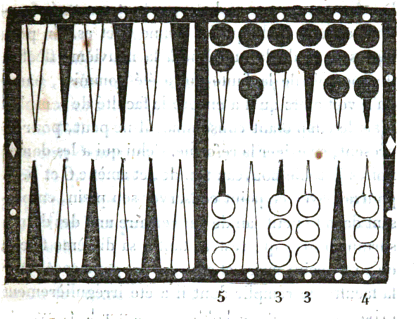
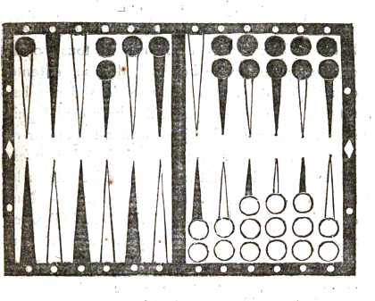
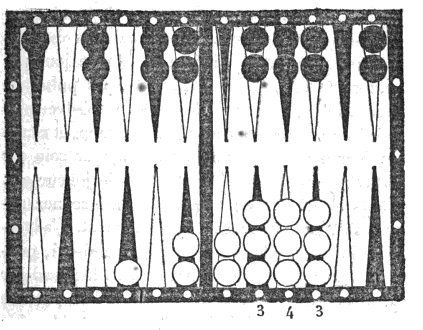

Chapitre III. Lois et règles concernant les dés, la marque des points, les dames, et les écoles.
Le jeu de Trictrac veut être joué avec une stricte et rigide observation de toutes les règles que l'usage et la raison ont consacrées ;. s'en écarter, c'est ouvrir un vaste champ aux difficultés, aux contestations. Les règles ont des bornes fixes et certaines qu'on ne peut dépasser, l'indulgence et la tolérance n'en ont pas; les premières ne varient pas, les secondes n'ont aucune stabilité : tel qui vient de se montrer indulgent pour une très légère faute, réclamera, le moment d'après, la même faveur pour une faute beaucoup plus grave, et de laquelle dépendra quelquefois le sort de la partie. Rien d'arbitraire dans les règles; tout l'est au contraire dans les modifications qu'on y veut apporter : si l'on se plaint aujourd'hui de leur sévérité, parce qu'on en est la victime, demain on se louera de cette même sévérité, parce qu'on aura l'occasion de l'appliquer à son avantage. Ce qui doit surtout, dans l'observation des règles, détourner d'adopter un pareil relâchement, c'est qu'il fait nécessairement contracter l'habitude d'une certaine négligence irréfléchie dans la conduite du jeu, laquelle peut devenir très préjudiciable lorsqu'on a l'occasion de jouer avec des personnes qui n'adoptent pas le même système de tolérance. A tous ces motifs il s'en joint un autre bien déterminant, c'est qu'on doit considérer que cette rigueur dans les lois, et cette gravité dans les peines attachées aux fautes, ont pour but principal d'opposer un frein à la mauvaise foi, et de déjouer les spéculations auxquelles elle pourrait se livrer, si elle n'était contenue par la crainte de ces mêmes peines. On croit donc donner à tous les amateurs de ce jeu un avis très utile, en les invitant à se soumettre sans répugnance à la rigidité de ses lois.
Quelques joueurs ont trouvé qu'il n'y avait pas assez de sévérité dans certaines règles, comme dans celle concernant l'école des deux jetons, l'augmentation d'école, etc. Nous leur répondrons que toutes nos règles sont fondées, non seulement sur les véritables principes avec lesquels il n'en est aucune qui ne soit en harmonie, mais encore sur l'équité la plus scrupuleuse, et que nous ne nous sommes jamais écartés de ces bases. En général il faut que les joueurs se soumettent à la rigueur des règles établies et reçues, parce que cette soumission écarte tout arbitraire, et pose des bases fixes et invariables, qui préviennent ou terminent les contestations; mais il ne faut pas que ces règles soient d'une rigidité tellement sévère, qu'elles donnent lieu à des tracasseries, à une sévérité outrée, qui quelquefois provoque l'aigreur et détruit l'aménité qui doit régner dans la société. Des règles qui auraient ce défaut déplairaient à des joueurs qui aiment à jouer loyalement et avec un noble désintéressement, même lorsqu'ils jouent gros jeu de semblables règles seraient repoussées de toute société honnête et choisie ; elles n'y pourraient être reçues. Ainsi, puisqu'on invite à ne pas s'écarter des règles, on doit en éloigner tout ce qui pourrait répugner à la délicatesse des joueurs de bonne société, pour qui elles deviendraient inutiles, parce qu'ils ne pourraient se résoudre à en exiger l'observation.
On remarquera peut-être que parmi les règles que nous allons donner, se trouvent des préceptes dont l'infraction n'entraîne aucune peine, et qui pourraient paraître plus convenablement placés au chapitre des maximes; tels que ceux qui ont pour titre : Avantage d'attendre que le coup soit joué pour marquer l'école. Attendre que le joueur ait marqué les points qu'il gagne en battant à vrai, pour marquer ceux qu'il donne en battant à faux, etc.
Mais nous observerons qu'il nous a paru plus utile de les rattacher aux règles auxquelles ils tiennent par leur nature, que de les insérer dans un chapitre où ils seraient comme isolés, et ne fixeraient pas également l'attention.
Règles concernant les dés.
Priorité du dé. Au commencement de la partie un des joueurs jette les dés pour déterminer la primauté; elle appartient à celui qui se trouve avoir de son côté le plus fort point, et il joue le dé qui a été amené. A chaque relevé cette primauté appartient de droit à celui qui s'en est allé. A la partie à écrire, l'usage généralement adopté attribue la priorité du dé à celui qui vient de marquer; lorsqu'il y a un refait, celui qui avait eu la primauté au marqué précédent, doit l'avoir encore au refait.
Rejouer les doublets. Lorsqu'au commencement de la partie, les dés jetés pour décider la primauté, donnent un doublet, on doit retirer les dés, et non pas jouer ce doublet de part et d'autre, comme plusieurs joueurs le prétendent et le pratiquent. Car si, par exemple, on amenait deux sonnez de suite, comment chacun des joueurs jouerait-il le second ? Prendrait-il son coin par puissance? Mais pour user de ce droit, il faut que le coin de l'adversaire soit vide; or, les deux coins que l'on prendrait simultanément, ne peuvent être considérés ni comme vides, ni comme pleins. En supposant même qu'ils les prissent tous deux par puissance (ce qui serait absurde), si le troisième coup donnait un beset, ils devraient donc marquer chacun 6 points; car l'un et l'autre coin seraient battus à faux par double as; et même dans ce cas, leur droit étant égal, auquel des deux appartiendrait la bredouille des jetons? De cette observation, il résulte évidemment que les doublets amenés en commençant ne doivent être joués ni par l'un ni par l'autre joueur, et qu'il faut tirer les dés de nouveau.
Manière dont les dés jetés. Les dés doivent sortir du cornet ensemble et du doivent être même jet; autrement le coup n'est pas bon et se recommence : ils doivent être jetés avec une force suffisante pour être répercutés par l'une des bandes, ou au moins par les dames qui y sont contiguës.
Le dé qui par hasard touche la main de l'adversaire est bon, à moins qu'il n'ait reçu de cette main une impulsion.
Dé couvert ou hors du tablier. Lorsqu'un des dés est posé sur l'autre, le coup pas bon; il en est de même lorsque l'un d'eux sort du tablier en les lançant, ou bien se pose sur l'une des bandes dans tous ces cas, on doit jeter de nouveau les dés.
Dé incliné Lorsqu'un des dés se trouve incliné contre l'une des bandes ou contre les dames, de manière qu'il ne porte pas pleinement sur sa base, et qu'il soit en partie appuyé et soutenu par la bande ou les dames, le coup n'est pas bon, il doit être recommencé. Lorsqu'un dé est incliné sur les jetons, il est toujours bon pour le point que présente la face la plus apparente.
Épreuve pour le dé incliné. Lorsqu'un dé est posé sur une dame contiguë à la bande, et qu'il touche cette bande, pour connaître s'il est bon, et vérifier s'il n'est pas en partie soutenu et appuyé par la bande, celui qui a intérêt que le dé soit bon doit écarter de la bande, avec précaution, la dame sur laquelle le dé est posé et la tirer en avant. Si le dé reste sur la dame il est bon, parce qu'il est évident qu'il est entièrement soutenu par sa base. S'il tombe, il est mauvais, parce qu'il est prouvé par sa chute que la bande aidait à le soutenir. Le droit exclusif de faire cette épreuve appartient nécessairement à celui pour qui le point présumé est favorable; car celui qui a un intérêt contraire pourrait, ou par négligence, ou par mauvaise foi, tirer la dame de manière à faire tomber le dé, quoiqu'il fût bon.
Dé pirouettant : comment on doit le fixer. Si, après avoir lancé les dés, l'un d'eux tourne longtemps et pirouette sur un de ses angles, l'un ment on doit des joueurs peut, d'accord avec l'autre, le fixer, en l'arrêtant avec le fond du cornet; mais il faut éviter de le pousser avec le cornet, comme le font quelques joueurs, car cette impulsion pourrait le faire sauter hors du tablier. Si cela néanmoins arrivait, l'autre joueur aurait l'option, ou de faire recommencer le coup entier, ou de ne faire retirer que le dé sorti du tablier; ear, un joueur de mauvaise foi, voyant que le dé déjà fixé présente un point qui lui est défavorable, pourrait faire sauter, par une forte impulsion, le dé qui pirouette, afin d'annuler le coup entier.
Pourquoi on ne peut fixer le dé pirouttant que d'un commun accord. Ce qui fait qu'on ne peut arrêter et fixer le dé pirouettant que d'un commun accord, c'est qu'il tant que d'un arrive quelquefois, quoique très rarement, que ce dé qui pirouette, lorsqu'il a été lancé avec force, va, dans son tournoiement, frapper fortement une des bandes, ou une des dames qui le renvoie avec la même force. Si dans cette réaction il est porté sur l'autre dé, il peut, par son choc, changer la face qui présentait d'abord ce dé, 'qui, par exemple, après avoir donné le 5, donnera ou le 4 ou le 3; et, dans ce cas, c'est le dernier point connu qui est bon, parce que le changement survenu est le produit naturel et la suite du lancement des dés, sans qu'aucune cause étrangère y ait influé. Or, il pourrait arriver qu'un joueur de mauvaise foi, pour qui le premier point est favorable, sans attendre le consentement de l'autre joueur, s'empressât de fixer le dé, pour empêcher le changement que pourrait produire le choc de ces dés, s'il avait lieu.
Pendant qu'un dé pirouette, ne pas enlever l'autre Par le même motif on ne doit pas, tant qu'un qu'un dé pirouette, ôter, comme le font plusieurs joueurs, l'autre dé du tablier, jusqu'à ce que le dé pirouettant soit fixé.
De même, si celui qui a fixé le dé pirouettant, lui avait donné un impulsion telle qu'en heurtant l'autre dé, il en eût changé la face déjà connue, le premier point que présentait ce dé serait toujours valable, et on tirerait l'autre dé seulement. L'adversaire n'aurait le droit de faire tirer de nouveau les deux dés que dans le cas où le dé pirouettant aurait été arrêté et fixé, contre sa volonté clairement manifestée soit du geste, soit de la voix.
On ne doit pas enlever les dés avant le coup joué. On ne doit pas relever les dés avant que le coup soit joué, ou au moins avant que les points amenés aient été nommés et bien reconnus par l'un et l'autre joueur, parce que si celui qui a mal vu le dé, fait erreur en jouant son coup, on est à portée de vérifier cette erreur par la présence du dé; et alors celui qui la commet, en jouant un autre point que celui amené, subit la peine de la fausse case. Si, au contraire, les dés ne sont plus dans le tablier, la vérité reste incertaine : le joueur peut contester et récuser le témoignage de son adversaire; ou si ce témoignage est appuyé de celui des spectateurs, celui qui fait l'erreur peut s'excuser sur ce qu'on lui a ôté les moyens de la rectifier, puisque la présence des dés dans le tablier était le seul moyen de la lui faire reconnaître. Alors il ne fait pas faute, et il doit seulement jouer son coup conformément au point reconnu par les spectateurs.
Cas où celui qui fait erreur n'est pas excusable. Cette excuse cependant ne serait point admise, s'il y avait contradiction entre la manière dont il a joué le coup et la marque des points. Si, par exemple, il a réellement amené 6 et 2, avec lequel il bat une dame qui lui donne quatre points, et qu'après les avoir marqués il joue 6 et 3, point par lequel il n'aurait pas battu, il n'est plus excusable; il ne peut pas prétexter une prétendue ignorance qui se trouve incontestablement démentie par la marque des points.
Si la partie se jouait sans spectateurs, et qu'il s'élevât quelque contestation sur les points amenés par les dés, le témoignage du joueur qui les a jetés prévaudrait, parce que, dans ce cas, l'impossibilité de la vérification provenant du fait de celui qui a enlevé les dés, il doit subir la peine de sa faute et s'y soumettre.
Nommer les points. L'usage exige qu'en nommant les points on commence toujours par le plus fort; ainsi on doit dire six et cinq plutôt que cinq et six.
Ne pas jeter les dés avant que l'adversaire ait achevé de jouer son coup. Il ne faut pas jeter les dés avant que l'adversaire ait achevé de jouer son coup; car alors il pourrait le jouer sur un dé connu et avec sécurité. Beaucoup de joueurs, connaissant l'habitude qu'a l'adversaire de jeter ainsi le dé avant le coup terminé, affectent, en jouant, une lenteur qui n'a d'autre but que d'attendre que l'impatience de l'autre joueur le détermine à jeter le dé, afin d'en profiter et de jouer à coup sûr. Il faut se tenir bien en garde contre un piège aussi dangereux, et s'accoutumer à opposer à ces joueurs autant de patience qu'ils affectent de lenteur; laquelle cessera bientôt, lorsqu'ils auront reconnu qu'elle leur est inutile.
On n'a pas le droit de couvrir les dés lancés. Quelques joueurs, lorsqu'ils ont eu l'imprudence de jeter ainsi les dés avant le coup consommé, cherchent à en prévenir les suites en couvrant les dés avec leur cornet, afin d'empêcher l'adversaire de connaître les points amenés: mais ils n'ont pas ce droit. Lorsque les dés sont lancés et fixés dans le tablier, ils appartiennent à l'un comme à l'autre joueur; et l'un comme l'autre à le droit d'en connaître les points. Celui qui a commis la faute doit se soumettre à tous les inconvénients qui en sont la suite.
Rompre les dés. Un usage accrédité depuis longtemps, et qui, chez les anciens joueurs, n'a eu vraisemblablement pour cause que le dépit ou la superstition, accorde la faculté de rompre les dés. Quoi qu'il en soit de cet usage, puisqu'il existe, nous devons en donner les règles.
On peut rompre ou avec la main, ou avec le cornet, ou même de la parole, lorsqu'on croit n'avoir pas le temps de le faire autrement; c'est néanmoins une faculté dont on doit user rarement, parce que trop de fréquence ne pourrait que fatiguer le joueur, et peut-être l'offenser. La civilité prescrit la discrétion qu'on doit y mettre; elle prescrit aussi de ne jamais se permettre de rompre, lorsqu'on est en gain, à moins pourtant que la trop grande précipitation du joueur ne rende cette mesure indispensable.
Si l'on jette les dés avant que l'adversaire ait joué Dés touchés. son coup, et qu'ils viennent à toucher sa main, le coup est bon; à moins qu'ils ne les repousse avec cette main, ce qui indiquerait, ou ferait présumer l'intention de rompre, et en serait l'équivalent. De même aussi un dé est toujours bon, quoiqu'en le lançant il ait touché le corps de l'adversaire, s'il retombe dans le Trictrac par l'effet de la réaction, et non par l'impulsion qu'aurait pu lui donner l'adversaire.
Règle concernant la marque des points
(Voyez au Vocabulaire la manière de marquer les points.)
Marque des points. Les points acquis en battant à vrai se marquent avant ceux donnés en battant à faux. Par exemple, chaque joueur a dix points, le premier joueur jette les dés, et bat à vrai son adversaire de deux points, et à faux de deux autres points; il commence par marquer le trou pour ses deux points, et efface les dix points de son adversaire, qui marque ensuite les deux points donnés par l'adversaire en battant à faux.
Les points que l'on gagne à raison de l'impuissance où est l'adversaire de jouer tout ou partie de son dé, se marquent après les autres. Exemple: les joueurs ont chacun dix points et leur plein; le premier amène un dé qui le fait tenir par impuissance, et qui lui vaut quatre points avec lesquels il marque un trou, démarque les dix points de son adversaire, et reste alors son adversaire marque les deux points pour le dé qui n'a pu être joué; mais, comme il marque en dernier, il ne peut profiter des dix points qu'il avait pour prendre un trou, puisqu'ils ont été effacés.
Quand on perd le droit de prendre la bredouille de jetons. Si celui qui doit marquer ses points avec deux jetons, ne les marque par mégarde qu'avec un seul, il peut se reprendre s'il s'en aperçoit, en y joignant le jeton oublié, tant qu'il n'a pas joué ses dames, s'il marque en premier, ou jeté les dés, s'il marque en second dans le cas contraire il perd le droit de la bredouille; mais l'adversaire n'en peut pas profiter, c'est-à-dire que, dans ce cas, aucun des joueurs ne peut prendre la bredouille.
Même règle pour la bredouille des trous. La même chose s'observe à l'égard de celui qui, gagnant la partie bredouille, la marque seulement simple. Il ne peut être envoyé à l'école, parce qu'on n'envoie point à l'école d'un trou; mais dès qu'il a joué, il n'est plus reçu à dire qu'il a oublié de marquer la partie double: le trou est perdu pour les deux joueurs.
Règle pour le pavillon. Il n'en est pas de même du pavillon; celui qui a oublié de le prendre y est toujours admis, lorsqu'il est reconnu par l'un et l'autre joueur qu'il n'y a pas eu interruption dans la série des trous qu'il a pris.
Débredouiller. Quand on débredouille son adversaire, il faut être attentif à ôter la bredouille; mais il n'en est pas de la bredouille comme des écoles, on peut l'ôter le coup d'après, quand on s'en souvient, sans que celui qui l'avait puisse se prévaloir de l'oubli. La loyauté demande même que celui qui avait la bredouille l'ôte lui-même, quand celui qui devait le faire l'a oublié.
Attendre que le joueur ait marqué les points qu'il gagne en battant à vrai, pour marquer ceux qu'il donne en battant à faux. Le joueur qui, par le même coup, est battu à vrai et à faux, ne doit pas marquer les points qu'il gagne en étant battu à faux avant que l'adversaire ait mar qué ceux qui lui sont acquis en battant à vrai.
Quand on gagne un trou, effacer les points de l'adversaire. Si ce joueur, étant battu à vrai et à faux, gagnait le trou par ce même coup, il ne doit pas le marquer avant que l'adversaire ait marqué les points qu'il gagne en battant à vrai, à moins qu'il n'en reçoive de lui l'avertissement; car il serait possible que cet adversaire, ne s'apercevant pas qu'il bat à vrai, fît école; auquel cas celui qui a marqué le trou trop précipitamment, serait déchu du droit de marquer cette école à son profit.
Celui qui gagne un trou doit lui-même enlever du tablier non seulement ses jetons de marque, mais aussi ceux de l'adversaire: autrement il s'exposerait à ne pas profiter des écoles que pourrait faire cet adversaire. On suppose que celui-ci a quatre points, et que par le coup qui donne le trou, il est battu à faux de quatre autres points; il serait possible qu'il ne s'en aperçût pas; or, dans ce cas, si le joueur gagnant le trou avait négligé d'enlever et de remettre le jeton qui marquait les points, il ne pourrait y avoir lieu à marquer cette école, puisque les points se trouveraient déjà marqués.
Celui qui perd son trou ne doit pas non plus s'empresser d'effacer lui-même ses points. Cette précipitation peut fournir matière à quelque erreur ou contestation; car le joueur qui marque le trou, ne voyant plus dans le tablier d'autres jetons que les siens, pourrait être fondé à croire qu'il gagne le trou double, et en conséquence le marquer.
Ces négligences auxquelles, à la vérité, ne sont attachées aucunes peines, doivent pourtant être soigneusement évitées, pour prévenir toute erreur ou difficulté; et d'ailleurs la régularité du jeu le prescrit ainsi.
Règles concernant les dames.
On doit jouer toutes les dames touchées. Toute dame touchée doit être jouée, s'il y a possibilité, à moins qu'avant de la toucher on n'ait dit j'adoube. Cette précaution, au surplus, ne sert qu'à pouvoir sans inconvénient soulever la dame pour s'assurer de sa position, et connaître sur quelle flèche elle est placée, ou pour assurer cette position. lorsqu'elle se trouve incertaine entre deux flèches.
Si, après avoir dit j'adoube, on portait et abandonnait une dame sur une flèche autre que celle où aboutit le point qu'on doit jouer, la précaution deviendrait inutile, et on serait sujet à la peine de la fausse-case. (voyez le mot j'adoube, page 1).
Exception pour la pile. Si, sans avoir dit j'adoube, on soulève plusieurs dames de la pile, on ne peut être tenu à en jouer qu'une, parce qu'on présume qu'on a pu être trompé par l'épaisseur des dames, ou par leur adhérence entre elles; ce qui arrive quelquefois. Mais si le joueur touche son talon sans intention présumée d'en jouer une dame (intention caractérisée par le soulèvement d'une des dames), il ne peut être tenu de jouer les dames touchées.
Dame posée sur une autre dame. Quand une dame a été enlevée de sa place et posée sur autre dame (ce qui ne peut arriver que lorsqu'on a l'intention bien évidente de faire avec ces deux dames une case entière), il est incontestable qu'on est obligé de jouer celle sur laquelle on a placé la première dame, parce que si cette dame n'a pas été touchée la main même du joueur, ce qui est très difficile à présumer, elle l'a été médiatement, c'est-à-dire par la dame que tenait la main du joueur; et que, par conséquent, l'intention de la jouer est manifestée de manière à ne donner lieu à aucun doute: ainsi c'est bien le cas d'appliquer le principe de dame touchée, dame jouée.
Dame mal posée et abandonnée. Lorsqu'on abandonne une dame sur une flèche autre que celle où le point doit aboutir, soit en deçà, soit au delà, cette dame reste entièrement à la discrétion de l'adversaire. Il peut, selon que son intérêt l'exige, ou la laisser à la place à laquelle elle a été posée, ou la mettre à sa vraie place, ou même obliger de jouer, avec cette dame, le coup entier tout d'une, s'il y a possibilité. Mais ce droit de faire jouer tout d'une n'a lieu que dans le cas seulement où cette dame aurait été portée au delà du nombre le plus fort; car, si elle eût été portée en deçà, il ne resterait que l'option, ou de la laisser à la place à laquelle elle a été posée, ou de la mettre à celle à laquelle elle aboutit véritablement. Si l'un des deux points avait d'abord été joué régulièrement, on ne pourrait exiger que le coup entier fût joué tout d'une avec la seconde dame, quoique cette dame eût outrepassé le point qui restait à jouer. On n'a plus aucun droit à exercer sur cette première dame, puisqu'elle a été bien jouée; on ne peut en avoir que sur le point qui a été joué subséquemment, puisque c'est sur ce point seul que l'erreur a eu lieu.
Ainsi, lorsqu'un joueur qui a amené 5 et 4, a d'abord placé le 4 régulièrement, si avec la seconde dame il pose un 6 au lieu du 5, l'adversaire a seulement l'option, ou de laisser cette dame à la flèche où elle a été indûment placée, ou de la faire rétrograder; mais non de faire jouer le coup tout d'une, quoiqu'avec cette dame on ait outrepassé le point le plus fort.
Une dame abandonnée ne peut être déplacée. Lorsque pour jouer l'un des points amenés, on a posé et abandonné une dame sur une flèche, et qu'on se repent ensuite de n'avoir pas joué préférablement l'autre point avec cette même dame, on n'y est plus admis; elle doit rester à la place où elle a été posée pour jouer le premier point, et elle n'en peut sortir que pour servir à jouer, si on le veut, les deux points tout d'une. Ainsi, par exemple, si l'on amène 5 et 3, et qu'on ait d'abord joué le 3 avec une dame qu'on a abandonnée sur la flèche où ce nombre aboutissait, et qu'on reconnaisse qu'il aurait été préférable de jouer le 5 avec cette même dame, on ne le peut plus.
Fausse case. Si, pour faire une case entière, on enlève deux dames dont une n'aboutit pas à cette case, et qu'on s'aperçoive de l'erreur avant de les avoir posées et abandonnées, on est à la vérité forcé de les jouer; mais on a le choix de le faire de la manière qu'on jugera la moins désavantageuse. Si, au contraire, elles ont été posées et abandonnées l'une et l'autre. sur la flèche où l'on a intention de faire case, l'adversaire a le droit de les faire jouer à son plus grand avantage, soit en les mettant l'une et l'autre en surcase, soit en les étalant découvertes sur deux flèches vides, soit en faisant jouer avec une le coup tout d'une, et remettant l'autre à la place d'où elle est sortie, quand une des deux a outrepassé le nombre le plus fort du point amené. Par exemple, si l'on avait joué 4 et 3, au lieu de 5 et 4, on ne pourrait pas être obligé à jouer tout d'une, parce qu'aucune des dames n'a outrepassé le plus fort point. En vain celui qui a commis la faute objecterait-il qu'un des deux points se trouve bien joué, et aboutit réellement par une des dames à la flèche en question, et que le droit arbitraire de l'adversaire ne peut et ne doit s'exercer que sur la seule dame qui ne peut y aboutir par l'autre point. A cette objection on oppose que les deux dames ayant été enlevées, placées et abandonnées ensemble, ont concouru simultanément à la faute d'une manière indistincte et inséparable; et qu'elles doivent par conséquent, l'une comme l'autre, être à la disposition de l'adversaire.
La rigueur de cette règle, et le danger auquel exposent les fausses cases, font connaître avec quel soin et quelle attention réfléchie on doit chercher à se garantir de cette faute, qui presque toujours est l'effet d'une trop grande précipitation. C'est par cette raison que la prudence a suggéré à certains joueurs la très sage et très utile précaution, lorsqu'ils ont une case à faire, de ne lever et poser chaque dame que l'une après l'autre. Par ce moyen ils atténuent les suites de l'erreur qu'ils pourraient commettre; car si cette erreur a lieu sur la première dame posée, il est à présumer qu'ils s'en apercevront avant d'avoir placé et abandonné la seconde; et alors ils joueront cette seconde dame de manière, sinon à corriger entièrement cette erreur, du moins à la rendre moins fatale. Si au contraire la première se trouve posée à sa vraie place, et qu'on se trompe seulement sur la seconde, la peine à subir ne peut concerner que cette seconde; l'adversaire n'ayant aucun droit à exercer sur la première, qui séparément a été bien jouée, et à l'égard de laquelle par conséquent tout est consommé. Conformément à ce principe, un joueur qui aurait couvert une demi-case avec une dame qui n'y aboutirait pas, serait tenu de mettre cette dame à là place qu'elle doit occuper; mais il conserverait le droit de couvrir cette demi-case avec la dame qui y aboutirait par le nombre qui reste à jouer. Ainsi l'adversaire doit attendre que la seconde dame soit jouée, parce que c'est de la manière dont elle le sera que dépend la consommation de la faute.
Quand un joueur ne s'aperçoit de la fausse case qu'après avoir jeté son dé, il ne peut plus réclamer contre le coup, qui par-là se trouve con sommé.
De tout ceci on doit conclure combien il est essentiel de ne pas perdre de vue le jeu de l'adversaire, pendant qu'il joue le coup qu'il vient d'amener, afin de pouvoir connaître et rectifier à temps les erreurs qu'il peut commettre. On ne peut exercer cette surveillance active et réciproque qu'en s'assujettissant, de part et d'autre, à ne jeter les dés qu'après que l'adversaire a achevé de jouer son coup. Autrement il arrive que chacun jouant simultanément, et étant occupé par conséquent de son propre jeu, on ne peut porter son attention sur celui de l'adversaire.
Un joueur qui aurait joué, dans son propre jeu, celui de ses points, par lequel seul il pouvait passer au retour, et qui et qui ne pourrait pas ensuite jouer le deuxième dé, peut être forcé de remettre la dame jouée à sa première place, et de jouer celle qu'il peut passer au retour. Cependant l'adversaire a le droit de laisser le coup tel qu'il a été joué; et, dans ce cas, il marque deux points pour l'impuissance de jouer l'un des nombres amenés.
Il n'en serait pas de même dans le cas que nous allons citer. Si un joueur dont le plein est fait, avait encore deux dames surnuméraires avec lesquelles il pourrait jouer 6 et 5 sans rompre, et qu'amenant ce point, il jouát d'abord le 5 avec la dame qui doit jouer le 6, ce qui le mettrait dans l'impossibilité de jouer la totalité de son point, l'adversaire aurait l'option, ou de laisser le coup tel qu'il a été joué (et alors il marquerait deux points. pour l'impuissance), ou de faire jouer le 6 avec la dame qui n'avait joué qu'un 5, et le point de 5 avec l'autre dame surnuméraire. Mais il ne pourrait, sous le prétexte de faire jouer la totalité du coup, obliger à rompre le plein, en exigeant qu'on passat, s'il y avait possibilité, une des dames du plein dans son jeu. Car pour exercer ce droit, il serait obligé de remettre la dame mal posée à la place qu'elle 'occupait; or, en le faisant, il rétablirait le joueur qui a commis la faute dans la puissance de jouer tout son point sans être obligé de rompre.
On ne peut placer des dames dans les jans dont l'adversaire peut faire le plein. Dans aucun cas, et pour quelque motif que ce soit, on ne peut placer une dame dans l'un des jans de l'adversaire pour y séjourner, tant qu'il y a possibilité d'y faire le plein; on peut seulement y emprunter le passage pour arriver tout d'une à l'autre jan.
Néanmoins il peut arriver, et il arrive quelquefois, que par une inadvertance commune aux deux joueurs, l'un d'eux entre une de ses dames dans le jan de l'adversaire, lorsque celui-ci pourrait encore remplir. Si cet adversaire ne réclame pas, et jette son dé, l'erreur est consommée, et le coup ne peut être réformé pour le présent. Mais si, après ce coup joué, il conserve encore la faculté de remplir, et s'aperçoit en même temps de la faute qui a été commise, il peut obliger celui qui occupe indûment son grand-jan, à l'évacuer par le coup subséquent, en exigeant qu'il passe dans l'autre jan, si cela est possible, la dame qui a été irrégulièrement placée. Si le point amené s'oppose à cette évacuation et la rend impossible, il a le droit d'empêcher qu'il soit introduit dans son grand-jan une autre dame, sous quelque prétexte que ce soit; car ce serait aggraver le mal, et même le rendre irréparable.
Nous croyons devoir appuyer cette décision d'un exemple qui en rendra l'application plus sensible et plus facile.

L'état des jeux figurés dans ce tableau présente, du côté des dames blanches, la septième et la dixième flèche entièrement vides, trois dames en surcase à la sixième flèche, deux au coin, et une seulement en surcase sur chacune des huitième et neuvième. Le côté des dames noires présente le plein fait, une dame surnuméraire à la septième flèche, et les deux autres à la dixième et au coin. Dans cette position réciproque, celui qui a les dames noires amène 4 et 2, qui l'oblige à rompre son plein; mais ne s'apercevant pas que l'adversaire peut encore remplir, il croit conserver, marque 4 points, et joue son 4 et 2 en portant la dame surnuméraire de sa septième flèche à la dixième flèche vide de son adversaire. Celui-ci, partageant la même erreur, ne réclame pas contre cette infrae tion, et jette le dé qui lui donne 6 et as. En por tant són as de la huitième à la neuvième flèche, il s'aperçoit de la faute qui a été commise, parce qu'il voit alors qu'il a encore la faculté de remplir. Mais le coup étant consommé, il ne peut, pour le présent, en exiger la réforme. Celui qui a les dames noires jette de nouveau son dé, et amène 6 et 5. Il pourrait avec ce point conserver son plein, en pas sant dans le petit-jan de l'adversaire une des dames surnuméraires qui restent tant à sa dixième flèche qu'à son coin; mais cet adversaire, pour recouvrer la faculté de remplir dont il a été irrégulièrement privé, a le droit de l'obliger à jouer le 6 avec la dame qui occupe mal à propos sa dixième flèche, et de rompre son plein pour jouer le 5, puisque c'est la seule manière dont peut s'opérer l'évacuation justement réclamée.
Cet exemple n'est applicable qu'au grand-jan; car si une dame avait été introduite dans un petitjan où le plein serait encore possible, et que la contravention se trouvat couverte par la consommation du coup, elle y resterait nécessairement, la faute ne pouvant être réparée, puisqu'il n'existerait aucun moyen de sortir cette dame.
Jouer avec une dame de moins. Lorsqu'un joueur est reconnu n'avoir que quatorze dames, il a le droit de faire rentrer, aussitôt qu'il s'en aperçoit, la quinzième dame dans son jeu ; mais la place qu'elle y doit occuper varie suivant les différentes positions de ce jeu au moment où l'absence est reconnue.
Si le talon est encore garni d'une ou plusieurs dames, celle qui rentre doit incontestablement y être placée; si le talon est vide, elle doit être placée sur la flèche du petit-jan déjà occupée par une ou plusieurs dames, la plus voisine du talon.
Si le petit-jan est totalement dégarni, elle ne peut être mise qu'au coin de repos, s'il est plein; ou, s'il ne l'est pas, sur la case la plus rapprochée de ce coin.
Si le jan de retour est avancé au point que toutes les dames se trouvent déjà passées dans le jeu de l'adversaire, elle doit occuper dans le grand jan de ce jeu la flèche déjà garnie de dames la plus près du coin; ou enfin, si toutes les dames se trouvent placées dans le jan de sortie, on la place en surcase dans ce jan sur la flèche la plus distante de la bande de sortie, quand il n'est plus possible d'y faire le plein. Si au contraire il y avait encore possibilité de remplir, elle doit être placée sur la flèche la plus rapprochée de la bande de sortie déjà garnie de surcase. Dans tous ces cas la rentrée de cette dame ne peut être profitable au joueur à qui elle appartient.
La sévérité que la règle prescrit pour la rentrée de cette dame est justifiée, et même commandée par la nécessité de prévenir tout ce qui, dans cette circonstance, pourrait devenir préjudiciable à l'adversaire. Elle tend en même temps à déjouer les spéculations astucieuses auxquelles des joueurs qui se seraient aperçus de l'absence de leur dame, pourraient se livrer, en retardant sa rentrée jusqu'au moment où ils trouveraient l'occasion de la rendre favorable et utile à leurs intérêts. Nous allons citer un exemple qui fera connaître combien cette rentrée, si elle n'était pas régularisée avec sagesse et prévoyance, pourrait devenir avantageuse à l'un des joueurs, et par conséquent préjudiciable à l'autre. On suppose qu'au moment où l'absence de cette dame est reconnue, le joueur auquel elle appartient a déjà déjà son grand-jan garni de cases, à l'exception de la sixième flèche, où se trouve une dame en demi-case; les trois autres dames sont placées au petit-jan sur les quatrième et cinquième flèches', ce qui jusqu'alors ne lui donne pour remplir que vingt chances. Si, en rappelant au jeu la dame absente, on devait la placer au talon, comme le prétendent quelques joueurs, le nombre des chances, par cette nouvelle position, se trouverait porté à vingt-huit au lieu de vingt. La différence serait encore plus sensible, si les trois dames, au lieu d'être distribuées sur les quatrième et cinquième flèches, se trouvaient réunies sur une seule; comme, par exemple, au coin bourgeois. Cette position en effet ne donnerait que onze chances pour remplir, au lieu que la rentrée de la dame, si on la plaçait au talon, en fournirait vingt-trois. En plaçant au contraire cette dame de la manière que la règle le prescrit, elle n'améliore en rien la position de celui à qui elle appartient; elle n'offre ni préjudice ni avantage pour l'un comme pour l'autre des joueurs.
La principale raison que donnent ceux qui veulent placer au talon cette dame rentrante, est que son absence n'ayant pu être préjudiciable qu'à celui à qui elle appartient, et que le talon, sa place naturelle, étant celle qui est la plus avantageuse pour sa rentrée, il n'y a pas de motifs a vouloir l'en priver. Mais nous ferons observer que si cette dame n'eût pas été absente, elle aurait pu se trouver seule au talon, et être battue à vrai par sonnez; qu'elle aurait été de même exposée à être battue, si elle eût été jouée sur une flèche plus avancée. Le joueur qui a fait faute doit donc être exposé à toute la rigueur de la règle.
Par une conséquence qui dérive du principe que la rentrée de la dame absente ne doit en aucune manière devenir préjudiciable à l'adversaire, si cet adversaire, après avoir gagné un trou qui lui permet de s'en aller, se détermine à rester sur l'examen de la position des jeux : quoiqu'il ait joué son coup en conséquence de cette détermination, il peut néanmoins s'en aller, si l'absence de cette dame est reconnue avant que l'autre joueur ait jeté les dés pour le coup suivant, lorsqu'il voit que cette rentrée rend sa tenue défavorable.
Si l'adversaire amenait un coup qui battît à faux la dame en demi-case du petit-jan sur laquelle doit être placée la dame rentrante, il aurait le droit, s'il s'apercevait de l'absence de cette dame, d'exiger sa rentrée immédiate, qui, couvrant la demi-case, le garantirait du préjudice que lui causerait cette demi-case battue à faux.
Si ce même joueur battait cette dame à vrai, et qu'alors celui à qui la dame manque voulût la faire rentrer, cette rentrée ne pourrait avoir lieu qu'après le coup marqué et joué.
Citons encore, à l'appui de la règle, une autre des spéculations dont nous avons parlé.
Un joueur qui n'a que quatorze dames, et dont le jeu est dans un état de ruine qui présente les apparences d'une grande bredouille presque inévitable, s'apercevant de l'absence de sa quinzième dame, pourrait dissimuler, et attendre, pour la réclamer, une occasion où sa rentrée pourrait lui fournir un moyen de s'opposer efficacement au succès de la grande bredouille dont il est menacé. Cette occasion aurait lieu, lorsqu'ayant déjà évacué les trois premières cases de son grand-jan, il ne lui resterait plus que les trois dernières; parce qu'alors, faisant rentrer sa dame, et la plaçant en surcase sur la neuvième flèche, il fortifierait par-là l'obstacle que ces trois dernières cases opposent au succès des grandes bredouilles dont elles sont le plus souvent l'écueil, lorsqu'on peut les conserver entières. C'est ce que la règle a sagement prévu, en voulant que la dame rentrante ne puisse occuper d'autre place que le coin de repos, lorsque toutes les dames se trouvent déjà passées dans le grand-jan.
Il y a une grande différence entre le cas où un joueur est reconnu n'avoir que quatorze dames, et celui où il est reconnu jouer avec seize. Le premier cas n'entraîne pas, comme le dernier, la nullité de ce qui a précédé : il ne produit pas même la nullité du relevé courant; 1° parce que c'est une faute du joueur qui ne s'est pas aperçu de l'absence de sa dame; 2° parce qu'il est difficile de constater l'époque de cette absence qui peut être très récente: enfin parce qu'un joueur de mauvaise foi pourrait facilement, en soustrayant une de ses dames, annuler ou une partie ou un relevé qui lui auraient été défavorables.
La question que nous venons de résoudre nous amène naturellement à faire observer combien est utile l'usage pratiqué par la plupart des joueurs de placer leurs dames, au talon, après un relevé, de manière à reconnaître de suite si leur nombre est complet.
Jouer avec une dame de plus. Lorsqu'un joueur est reconnu jouer avec seize dames, l'adversaire a le choix, ou d'annuler toute la partie, soit qu'on la joue en douze trous, soit qu'on la joue à écrire; ou de la continuer dans l'état où elle se trouve, en supprimant la seizième dame. Cette suppression se fait en ôtant une dame du talon, s'il y en a encore; s'il n'y en a plus, en ôtant, au choix de l'adversaire, une de celles placées dans le petit-jan; et si le petit-jan est entièrement vide, en ôtant, toujours au choix de l'adversaire, une de celles qui se trouvent en surcase au grand-jan. Si cependant l'erreur était reconnue au commencement de la partie, c'est-à-dire au premier relevé, et lorsqu'il reste encore au moins deux dames au talon du joueur qui en a seize, cette option ne pourrait avoir lieu; car il n'existerait aucun motif pour annuler tout ce qui a précédé. Comme il n'y aurait encore eu alors que quatorze dames qui eussent été jouées, il serait constant que la présence de la seizième n'a pu influer en aucune manière sur tout ce qui a précédé.
La règle exige la présence de deux dames au talon pour prévenir l'objection que pourrait opposer l'adversaire s'il n'y en avait qu'une. Il serait en effet possible que cette dame étant seule eût été précédemment battue à faux par un sonnez, et eût par conséquent préjudicié à cet adversaire.
Quelques joueurs ont élevé des doutes sur la validité de cette décision en ce qui concerne la partie à écrire; ils conviennent que l'option d'annuler, attribuée à l'adversaire, est incontestable à la partie en douze trous; mais ils pensent qu'à la partie à écrire, cette option ne pourrait s'exercer qu'à l'égard du marqué courant, et non à l'égard des marqués précédents; parce que rien ne constate que cette seizième dame ait existé au jeu pendant le cours des marqués qui sont terminés, ni que sa présence ait influé sur leurs résultats. Cette opinion présente une inconséquence frappante; car si l'on a le droit d'annuler toute la partie, lorsqu'on la joue en douze trous, on doit jouir également du droit d'annuler toute la partie, lorsqu'elle se joue à écrire. Les marqués sont un fragment de la partie à écrire, comme chaque relevé est un fragment de la partie en douze trous: or, si l'on a le droit d'annuler tous les relevés de cette dernière, pourquoi n'aurait-on pas le droit d'annuler tous les marqués de la première? En vain objecte-t-on que rien ne constate à quelle époque de la partie cette seizième dame a été introduite; nous répondons d'abord que cette objection est applicable à la partie en douze trous comme à celle à écrire : en second lieu que, puisque rien ne constate le moment où cette dame a été introduite, on a le droit de supposer qu'elle a existé dans le jeu dès le commencement de la partie, et que par conséquent sa présence a pu influer sur tout ce qui a précédé. Comment, en effet, cette dame aurait-elle été introduite pendant le cours de la partie, à moins qu'on ne suppose qu'elle l'a été frauduleusement ? Une pareille supposition fournirait un motif bien plus grave pour annuler tout ce qui a été fait. Il n'en est pas de jouer avec une dame de plus comme de jouer avec une dame de moins: dans ce dernier cas, la dame absente peut avoir été jetée hors du trictrac par un acte involontaire, un mouvement inconsidéré; et son absence peut être récente. D'ailleurs cette dame ne peut être préjudiciable qu'à celui qui en est privé. Une dame de plus, au contraire, ne peut être introduite au milieu d'une partie que par un acte positif et volontaire; et son introduction est aussi utile à celui qui s'en sert, qu'elle est préjudiciable à son adversaire.
Voyez l'observation qui termine l'article intitulé : Jouer avec une dame de moins.
Chaque joueur, changeant de dames par l'effet du jan de retour, dispose de celles de l'adversaire comme des siennes propres. Au jan de retour, lorsque de part et d'autre les dames sont passées dans les jans opposés; si l'un des joueurs croyant gagner le trou, qu'il ne gagne pas effectivement, rompt le jeu pour s'en aller, il fait école des points qui lui manquent pour avoir le trou, quoique les dames qu'il a touchées pour rompre le jeu et les remettre à la pile, ne soient pas ses propres dames, mais celles de son adversaire. Dans ce cas il est forcé de jouer dans son jeu les dames correspondantes à celles qu'il a indûment touchées dans le jeu de l'adversaire, c'est-à-dire que si, par exemple, il avait touché, pour les enlever, des dames placées aux quatrième et cinquième cases, il devrait jouer celles qui dans son jeu se trouveraient pareillement placées aux quatrième et cinquième cases.
Quelques joueurs ont élevé contre cette décision une difficulté résultant, suivant eux, de ce qu'on ne fait école que lorsque l'on touche ses propres dames, et non lorsque l'on touche celles de son adversaire; mais cette objection ne doit être considérée que comme une vaine subtilité. Le joueur en effet qui, dans cette position, marque le trou, et rompt le jeu en relevant les dames de son adversaire, manifeste bien évidemment l'intention de s'en aller; il fait le seul acte par lequel cette intention peut recevoir son exécution; et lorsqu'il s'en va, les dames de son adversaire deviennent les siennes propres, puisque elles doivent former sa nouvelle pile: c'est donc un acte qui détermine la possession qu'il en prend.
Écoles.
Définition. Une école a lieu toutes les fois qu'on ne marque pas les points qu'on a, ou lorsqu'on marque des points qu'on n'a pas. Dans l'un comme dans l'autre cas, l'adversaire marque à son profit ou les points omis, ou ceux qu'on a marqués de trop: la première de ces écoles s'appelle école d'omission, ou par moins, la seconde, école par trop.
École par moins plus préjudiciable que l'école par trop. Par cette définition on voit que le préjudice de l'école par moins est double de celui qui résulte de l'autre école : car non seulement elle prive le joueur qui la fait d'un bénéfice qui lui était acquis, mais encore elle attribue ce même bénéfice à l'adversaire. En sorte que si, par exemple, chacun des joueurs a six points, et que l'un d'eux, gagnant six autres points, omette de les marquer; au lieu de prendre le trou, il le donne à l'adversaire: ce qui fait, de la perte au gain, une différence de deux trous, et même de trois, si l'un ou l'autre se trouvait avoir la bredouille. L'école par trop au contraire ne porte qu'un préjudice simple : car si elle donne à l'adversaire un bénéfice auquel il n'avait pas droit; au moins elle ne prive pas celui qui la fait d'un bénéfice qui lui fût acquis.
Époque où les écoles sont consommées. L'école par omission est consommée du moment où celui qui la fait a jeté les dés, si les points omis proviennent du coup de l'adversaire; ou bien du moment où il a touché ses dames, s'ils proviennent de son propre coup; et dans ce dernier cas l'école serait pareillement consommée, lors même que par erreur ce joueur aurait, pour jouer le coup, levé une des dames de l'adversaire, au lieu de lever une des siennes; parce que l'intention et la volonté de jouer le point qu'il a amené sont suffisamment manifestées par l'enlèvement d'une dame quelconque. Cette erreur a surtout lieu au jan de retour, où le mélange des dames de couleurs différentes, nécessité par la marche de ce jan, doit la rendre plus fréquente.
L'école par trop est irrévocablement consommée, lorsque le joueur qui la fait a posé et abandonne son jeton; car on ne peut jamais reculer un jeton; on peut seulement l'avancer, lorsqu'avant de toucher ses dames, ou de jeter les dés, on s'aperçoit qu'on a marqué moins de points qu'on n'en avait. Il faut marquer les écoles par trop, avant de jeter les dés pour le coup suivant, sans quoi on n'y est plus reçu; et celui qui aurait marqué plus de points ou de trous qu'il ne devait en marquer acquiert alors le droit de les garder, par le risque qu'il a couru de porter la peine de son erreur si l'autre s'en fût aperçu.
Points effacés mal à propos. Lorsqu'un joueur par inadvertance, croyant gagner le trou, ou que son adversaire le gagne luimême, ou enfin par tout autre motif, démarque les points qui lui étaient précédemment acquis, et remet son jeton à la bande sans marquer le trou, s'il reconnaît son erreur avant d'avoir jeté les dés, ou joué ses dames, il est admis à les reprendre, en remettant son jeton à la place qu'il' occupait. Si au contraire le coup était consommé lorsque l'erreur est reconnue, les points effacés seraient perdus, et le joueur qui les a démarqués serait réputé en avoir fait l'abandon; mais il n'encourrait pas la peine de l'école. Cependant si, en démarquant ses points, au lieu de mettre le jeton à la bande, il le posait et l'abandonnait à une place qui indique la marque de deux ou quatre points, il ne serait plus admis à réparer cette erreur, quoiqu'il n'eût ni marqué le trou, ni jeté les dés, ni joué ses dames; il devrait remettre son jeton à la place qu'il occupait; et l'adversaire aurait le droit de marquer l'école des points qui manquaient pour avoir le trou, et de ceux qui auraient été marqués de reste. La raison en est que ce qui caractérise l'école par trop, ce qui la consomme irrévocablement, c'est l'abandon du jeton en marquant des points quelconques, indépendamment de la marque du trou; cet acte en effet équivaut à la marque du trou, et la suppose.
À cette opinion quelques joueurs en opposent une contraire; ils prétendent que le déplacement du jeton remis à la bande, sans avoir marqué le trou, et même avant d'avoir jeté les dés ou joué les dames, n'est plus réparable; que le joueur qui a commis la faute perd les points qu'il avait; ou, s'il á marqué des points de reste, qu'il doit rester à cette dernière marqué, sans qu'il en résulte, dans l'un et l'autre cas, aucune école aú profit de l'adversaire.
Ainsi par ce système celui qui, en portant son jeton à la bande, a fait un acte qu'on ne peut et ne doit considérer que comme un simple abandon de ses points, serait traité plus défavorablement que celui qui a commis une école réelle, et a marqué effectivement des points qu'il ne gagnait pas, en plaçant par exemple son jeton à la marque de deux points, ce qui équivaut à la marque d'un trou et deux points de reste. Le premier perdrait la totalité de ses points, le second n'en perdrait qu'une partie: inconséquence inadmissible. Il y a plus, ce joueur qui a enlevé son jeton et l'a remis à la bande, aurait un moyen infaillible d'échapper à la perte qu'on veut lui imposer, ou du moins de la rendre bien plus légère; car le coup n'étant pas encore consommé, il marquerait le trou et deviendrait par-là incontestablement soumis à la peine de l'école, qui ne pourrait être autre que de lui faire effacer ce trou et remettre son jeton à la marque de dix points; alors l'adversaire marquerait deux points d'école, ainsi qu'on doit le pratiquer à l'égard de celui qui a marqué indûment des points de reste.
Les partisans de ce système l'appuient d'une objection spécieuse: la faculté, disent-ils, accordée au joueur qui a effacé ses points, de les reprendre, peut induire son adversaire dans une erreur préjudiciable; car cet adversaire, n'ayant plus à craindre les huit ou dix points qu'on vient d'effacer, peut se déterminer avec confiance à exposer des dames en demi-case ou à mettre dedans, s'il est sur le point de remplir ; ce qu'il n'aurait pu faire sans témérité, si la marque de dix points eût subsisté: or, en admettant la faculté de les reprendre, sa confiance serait trompée, et il se trouverait exposé à a perte presque certaine du trou; ce qu'il avait grand intérêt d'éviter.
Pour répondre à cette objection et la détruire, il suffit de rappeler le principe bien reconnu, et non contesté, que toutes les fois qu'un joueur a été induit en erreur par un acte quelconque de son adversaire, il rentre dans tous ses droits, et il est reçu à réformer ce que l'induction en erreur l'a déterminé à faire ainsi dans ce cas le joueur trompé a la faculté incontestable de jouer son coup de nouveau. Il n'en faut pas davantage pour faire disparaître l'objection, et maintenir l'autorité de la décision que nous avons donnée.
Trous démarqués mal à propos.
Si un joueur qui gagne un ou plusieurs trous, au lieu de les marquer en avançant son fichet, le fait au contraire rétrograder, et démarque par distraction ses anciens trous; si même il les démarque tous en mettant son fichet au repos, ce joueur est admis à reprendre les trous démarqués mal à propos, ainsi que ceux nouvellement gagnés, quand même il aurait marqué des points de reste, pourvu toutefois que le coup ne soit pas consommé; car s'il avait joué ses dames, ou jeté les dés, alors il ne pourrait reprendre que les trous anciennement acquis, et non ceux nouvellement gagnés. S'il y avait contestation à l'égard des premiers, on s'en rapporterait sur ce point au témoignage des spectateurs, s'il y en avait; ou à défaut de ce témoignage, à l'affirmation de l'adversaire.
Les deux cas que nous venons de citer sont assimilés à celui où un joueur ayant à marquer un ou plusieurs trous et des points de reste, se contente de marquer les points, mais oublie de marquer les trous.
Avertissement qu'on ne marque pas, parce que l'on donne, ou que l'on croit donner le trou C'est un usage consacré par un assentiment général et qui a acquis force de loi, qu'un joueur qui gagne des points par le coup qu'il amène, mais qui, par le même coup, donne le trou à son adversaire, au lieu de marquer les points qu'il gagne, se contente d'avertir qu'il ne marque pas; et cet avertissement équivaut à la marque réelle avec le jeton des points gagnés : car, par la marque du trou, ils seraient effacés aussitôt que marqués. Cet avertissement suffit pour priver l'adversaire de la bredouille des jetons, s'il l'a; et alors il ne peut marquer que le trou simple. Mais si ce joueur qui a averti, parce qu'il croyait donner le trou, ne le donne pas effectivement, a-t-il le droit, après son coup joué, et lorsqu'il reconnaît son erreur, de reprendre les points qu'il n'a pas marqués, en prétendant que son avertissement équivaut à une marque véritable, la supplée et produit le même effet? Non, il n'a pas,. et ne peut avoir ce droit; car l'avertissement n'est reçu comme équivalent à la marque réelle, que dans le cas où l'on donne effectivement le trou; mais, lorsqu'on ne le donne pas, il ne peut produire le même effet. Le motif qui a fait admettre cet usage, a été de ne pas marquer inutilement des points qui seraient aussitôt effacés, et dans cette circonstance ce motif n'existe pas. Cet avertissement sert seulement à constater qu'on a vu et re connu les points gagnés, et qu'il n'y pas, à cet égard, omission véritable. Par cette considération, s'il n'y a pas école, il y a faute; et l'erreur commise en croyant donner le trou qu'on ne donne pas, prive nécessairement des points qu'on s'est abstenu de marquer par suite de cette erreur. Il suit de là, que si l'adversaire a la bredouille des jetons, il la conserve malgré l'avertissement.
Mais il en est autrement si le joueur qui croit donner le trou, le gagne lui-même. Supposons, par exemple, qu'ayant quatre points, et son adversaire huit, il batte, par son coup de dés, deux dames à vrai, mais qu'il croie en battre une à vrai et l'autre à faux, et avertisse en conséquence qu'il ne marque pas; alors son adversaire a le droit de marquer quatre points d'école qui lui donnent le trou. En effet l'avertissement prouve indubitablement que le joueur qui s'est abstenu de marquer, n'a reconnu et n'a cru gagner que quatre points, et qu'il n'en aurait marqué que quatre, s'il eût marqué avec des jetons, parce qu'il a cru l'une des dames battue à faux. Or l'avertissement, en suppléant la marque réelle, ne peut avoir plus d'effet que n'en aurait eu la marque elle-même. Le seul effet qu'il puisse produire est d'ôter à l'adversaire la bredouille de jetons, s'il l'a, et de l'obliger à marquer le trou simple; parce qu'à cet égard il supplée effectivement la marque, et constate que partie des points gagnés ont été bien reconnus.
Le développement que nous avons donné à cette décision, et les motifs dont nous l'avons appuyée, nous ont paru nécessaires pour combattre et détruire l'opinion de quelques joueurs qui prétendent que, dans le premier des cas énoncés, le joueur qui a averti, croyant donner le trou qu'il ne donne pas, a le droit, en vertu de cet avertissement, de reprendre les points qu'il s'est abstenu de marquer. Les motifs que nous avons donnés suffisent pour prouver la fausseté de cette opinion.
A l'égard de l'autre cas (celui où le joueur croyant donner le trou, le gagne lui-même), les opposants à notre décision conviennent que celui qui s'est contenté d'avertir, n'a pas à la vérité le droit de prendre le trou, parce qu'il est bien prouvé qu'il n'a pas reconnu la totalité des points qu'il gagnait; mais ils prétendent qu'il peut se mettre à dix points, et que par conséquent il ne fait école que des deux points qui manquent pour achever le trou. Suivant eux, s'il est prouvé qu'il n'a pas vu les huit points qu'il gagnait, il n'est pas prouvé qu'il n'en a pas vu six; et ainsi il ne doit faire école que de deux points. Ce système est tout à la fois injuste et inconséquent; car, d'un côté, il fait produire à un avertissement vague et indéfini plus d'effet que n'en aurait produit la marque réelle; et de l'autre, il fournit le moyen de couvrir des fautes qu'on aurait pu commettre en marquant avec des jetons. En effet, si celui qui avertit, voit plus ou moins de points qu'il n'en gagne effectivement; si même, n'en gagnant pas du tout, il croit néanmoins en gagner, il échappe, par cet avertissement, aux écoles qu'il aurait encourues en marquant avec le jeton. C'est donc un usage abusif contre lequel les règles n'offrent aucune garantie. Ne pourrait-on pas en prévenir les effets en convenant que le joueur, en avertissant qu'il ne marque pas, sera tenu de spécifier le nombre de points qu'il s'abștient de marquer?
Le joueur qui est à tort averti de prendre le trou, ne peut être mis à l'école. Si le joueur qu'on a averti de prendre le trou ne l'avait pas, mais le marquait néanmoins sur l'avertissement qui lui en est donné, l'adversaire pourrait, s'il s'en apercevait à temps, le lui faire effacer, en le réduisant aux points qu'il avait; mais il ne pourrait marquer l'école, parce qu'il est lui-même la cause de l'erreur. Cependant il est possible que ce joueur, par un acte de mauvaise foi, marque, sur cet avertissement, le trou, quoique s'apercevant de l'erreur; mais il est possible aussi qu'il le marque de bonne foi: il n'est donc pas juste qu'il devienne victime d'une faute dont il n'est pas l'auteur.
On ne peut profiter d'une erreur qu'on a occasionée. En général il est reçu en société qu'on ne peut profiter d'une erreur qu'on occasionne ; ainsi toute parole, tout acte capable d'induire l'adversaire en erreur, donne lieu à la réforme, de la part de cet adversaire, des fautes qu'il aurait pu commettre par suite de cette induction. Si, par exemple, un joueur ayant jeté son dé, l'adversaire dit: vous n'avez rien; et que s'en rapportant à cette parole, le joueur néglige de se livrer à un examen plus attentif, et oublie de marquer des points qu'il gagne effectivement; non seulement ce joueur, s'il reconnaît son erreur, n'encourt pas la peine de l'école, mais il a le droit, même après son coup joué, de marquer les points qu'il a omis. L'erreur provoquée par l'adversaire ne peut, ni profiter à cet adversaire, ni priver un joueur loyal et trop confiant d'un bénéfice qui lui est légitimement acquis; ainsi dès qu'il s'aperçoit qu'il a été trompé, il rentre dans la plénitude de son droit, et en recouvre l'usage.
Le but principal qu'on se propose dans l'établissement des règles, doit toujours être de frustrer la mauvaise foi et la déloyauté du fruit de leurs manœuvres insidieuses; or, si le joueur trompé était déchu du droit de marquer les points qu'il gagne, quoique l'adversaire qui a causé l'erreur ne pût en marquer l'école, cette privation serait encore un appât suffisant pour un adversaire astucieux.
Voyez, pour l'application de ce principe, l'article intitulé : Points effacés mal à propos, p. 69.
Le fichet déplacé ne fait pas école. Le déplacement du fichet pour marquer des trous qu'on n'a pas, ne fait pas école, parce qu'en principe, pour faire école et pour qu'elle soit consommée, il faut avoir touché ou ses dames ou ses jetons à l'égard même de ces derniers, il faut les avoir placés et abandonnés; car tant qu'ils sont en main, ou qu'on les touche, on peut les reculer, si on s'aperçoit de l'erreur.
Trou sans bouger. Un joueur qui, par un seul coup de dés, gagne douze points, et qui, au lieu de marquer le trou sans bouger, le marque en remettant à la bande le jeton qui marquait les points qu'il avait précédemment, fait école de la totalité de ces points.
Celui qui ne joue pas, et qui par erreur lève ses dames, ne fait pas école. Lorsqu'un joueur, croyant que son adversaire qui prend le trou va s'en aller, lève quelques unes de ses dames pour rompre son jeu, il n'est pas, dans le cas où cet adversaire se détermine à rester, privé du droit de marquer les points qu'on a pu, par le même coup, lui donner en le battant à faux. Comme ce n'est pas à lui à jouer, l'action de lever ses dames ne peut tirer à conséquence; il n'y a que le jet des dés qui, en pareil cas, détermine l'école.
Quand un joueur s'en va par erreur, si l'adversaire rompt en même temps, le trou est bien acquis. Lorsqu'un joueur, croyant avoir le trou qu'il n'a cependant pas, le marque, et rompt son jeu pour s'en aller; si l'adversaire, partageant son erreur, rompt aussi en même temps le sien, le trou est bien acquis, et le relevé irrévocablement terminé; parce que la rupture simultanée du jeu de cet adversaire ne peut être considérée que comme un acquiescement formel et positif qui légitime et consomme le coup.
Pour faire école, il faut démarquer l'adversaire et se démarquer soi-même. Si un joueur, croyant que son adversaire fait école, effaçait les points de celui-ci, sans les marquer à son profit, il ne ferait point école: parce que ce n'est point en déplaçant les pièces de l'adversaire qu'on fait école, mais bien en déplaçant les siennes propres.
École faite pour avoir joué le premier dé sans connaître le point du second. On ne doit pas s'empresser de marquer ses points ni de jouer ses dames, lorsqu'il n'y a qu'un point connu, et que l'autre à cause du tournoiement du dé reste encore inconnu. D'abord on s'expose à faire faute; ce qui arriverait, si le pirouettement du dé se terminait par un choc qui changerait la face déjà connue de l'autre dé: de plus, il est possible que le nombre que présentera le dé qui n'est pas encore fixé rende vicieuse où la marque anticipée des points, ou la manière dont le premier a été joué. Par exemple, un joueur qui n'a plus, pour terminer le plein de son petit-jan, qu'une demi-case à couvrir à la deuxième flèche, jette ses dés; le premier qui s'arrête présente le nombre 2, par lequel il remplit indubitablement. Mais s'il s'empresse, avant que second dé soit fixé, de marquer quatre points et de remplir, il s'expose à faire école de deux points. En effet, si son dernier dé présentait encore le nombre 2, il remplirait par doublet, ce qui lui vaudrait six points au lieu de quatre; mais, ayant déja joué une dame, il ne serait plus à temps de réformer sa marque, et l'école serait faite.
Autre exemple: Un joueur n'a plus, pour terminer son grand-jan, qu'une demi-case à couvrir à la sepfième flèche, et il ne lui reste pour la couvrir qu'une dame au coin bourgeois, et une en sur-case à la sixième flèche. Si après avoir jeté ses dés, dont l'un présenterait le nombre 2, tandis que l'autre pirouetterait, il s'empressait de marquer quatre points pour le 2 connu qui remplit, il s'exposerait à faire école de ces quatre points, si le dé qui n'est pas encore fixé donnait le nombre six : car étant obligé de jouer ce nombre six avec la dame du coin bourgeois qui aboutissait par le nombre deux à la demi-case, il se trouverait dans l'impossibilité de remplir.
Ecole d'école; école de trou. Il n'y a point école d'école : il n'y a point école de trou. Ces deux principes sont incontestables; mais on donne souvent à l'un et à l'autre une fausse interprétation qui exige un éclaircissement.
D'abord il n'y a pas école d'école, en ce sens seulement que, si on fait une école que l'adversaire ne veut pas, ou ne croit pas devoir marquer, il ne peut pour cela être mis lui-même à l'école. A l'égard des trous, il n'y a effectivement pas à école; mais cela doit s'entendre seulement du cas où un joueur qui a le trou simple, le marque double, ou bien l'ayant double le marque simple; car un trou double comme un simple est la représentation de douze points; la seule différence, c'est que le premier représente douze points pris sans interruption, et le second pris avec interruption dans leur série. Le nombre des points marqués par le trou double et par le trou simple étant égal, il ne peut donc y avoir lieu à école; mais seulement à faire démarquer un trou lorsqu'on l'a marqué double, ne l'ayant que simple. Mais, si un joueur, ayant par son dé trois trous, n'en marque qu'un, ou si, n'ayant droit d'en marquer qu'un ou deux, marque trois ou quatre, il fait école de douze points, parce que trois ou quatre trous sont la représentation de vingt quatre points, et que ne devant en marquer que douze, il fait école de douze. Il n'y a donc réellement jamais école de trou.
Il n'y a pas non plus lieu à l'école lorsqu'un joueur, gagnant par le coup survenu assez de points pour compléter le trou, et même au delà, déplace son' jeton, le remet à la bande s'il n'a pas de reste, ou s'il en a, marque ce reste, mais oublie de marquer le trou, parce que c'est le déplacement du jeton posé à la place qu'il doit occuper, qui caractérise et constitue véritablement la marque, et non le déplacement du fichet.
Mais si celui qui gagne un trou sans bouger ne le marque pas, l'adversaire a le droit incontestable de marquer l'école de ce trou, parce que dans cette hypothèse, comme il n'y a lieu à aucun déplacement du jeton qui marquait ses points, rien ne caractérise la marque de ceux qu'il vient de gagner; au contraire tout indique que le joueur ne les a ni aperçus ni reconnus. Il ne suffit même pas d'avoir déplacé les jetons de son adversaire, parce que ce n'est pas l'action exercée sur les jetons de cet adversaire qui constitue la marque et peut y suppléer.
Fausse école. Si un joueur croyant que son adversaire a fait une école qu'il n'a réellement pas faite, la marque, ce joueur est lui-même soumis à l'école : c'est ce qu'on appelle fausse école. Par exemple, le joueur a trois cases dans son grand-jan, il jette les dés, et par le point amené il battrait le coin de l'adversaire si lui-même avait le sien; mais ne l'ayant pas, il joue sans rien marquer. L'adversaire ne faisant pas attention que le premier joueur n'a pas son coin, l'envoie à l'école pour n'avoir pas marqué quatre points du coin qu'il croit être battu; c'est une fausse école le premier joueur doit effacer ces quatre points et les marquer à son profit.
La règle sur la fausse école a donné lieu à une question dont nous croyons devoir donner ici la décision.
Un des joueurs a quatre points, l'autre en a dix, celui-ci amène un coup par lequel il gagne quatre points, il marque le trou et deux points de reste ; le premier, ne s'apercevant pas comment l'autre gagne ces quatre points, croit qu'il y a école : en conséquence il démarque le trou de son adversaire, le remet à dix points, et, rétablissant sa marque, il ajoute quatre points pour l'école à ceux qu'il avait déjà, et en marque huit. Celui qui avait marqué régulièrement, et que mal à propos on voulait mettre à l'école, démontre l'erreur, et reprend son trou avec les deux points qu'il avait de reste; mais il veut en ajouter huit pour l'école encourue par son adversaire. Il prétend que son adversaire, dont les points se trouvaient anéantis par la marque régulière du trou, s'est mal à propos placé à huit points, puisqu'il n'avait plus droit de rien marquer; mais cette prétention n'est point admissible. Car celui qui, en rétablissant le jeu dans l'état où il était précédemment, s'est placé à huit points, n'a véritablement fait erreur que de quatre points. Pour se convaincre de cette vérité, il suffit de supposer que ce joueur, en rétablissant les choses dans le premier état, eût laissé son jeton à quatre points qu'il avait précédemment, sans marquer l'école, il n'aurait certainement rien marqué; il ne fait donc école que de ce qu'il a marqué au delà de ces quatre points.
Le joueur qui a intérêt d'obliger à marquer un trou doit avertir avant que les des soient jetés pour le coup suivant, et le point connu. Lorsque l'un des joueurs amène un coup par lequel il donne le trou à son adversaire, s'il a intérêt à l'obliger de marquer ce trou, il doit l'avertir, et lui imposer cette obligation avant que les dès soient jetés pour le coup suivant; autrement il est déchu du droit d'obliger à marquer ce trou. Si pour prévenir l'avertissement, cet adversaire s'empresse trop de jeter les dés, il faut les rompre, ou manifester son opposition d'une manière quelconque. Ce qui motive la justice et la nécessité de cette déchéance, c'est que le joueur qui a l'option et le droit de faire marquer le trou, doit se déterminer uniquement sur la position respective et actuelle des jeux et non sur la connaissance des points qu'amènera son adversaire. Un avantage aussi exagéré, et qui bannirait toute incertitude, serait contraire à l'essence même de ce jeu, dont tout l'art doit consister dans une sage combinaison des chances du hasard, et non dans la manière de se préparer, par des spéculations insidieuses, des moyens de jouer à coup sûr.
Observations sur les écoles présu mées volon taires ou à dessein. Lorsqu'un des joueurs fait une école, ou par moins ou par trop, dont les résultats présentent lui une grande utilité, on présume ordinairement, et souvent avec raison, que cette école a été faite volontairement et à dessein. Cependant il arrive. quelquefois qu'elle est faite sans intention et par inadvertance. Quoi qu'il en soit, lorsque cette tentative est fréquemment renouvelée par un même joueur, elle élève contre sa loyauté de justes soupçons. L'opinion, d'accord avec la morale, la range dans la classe de ces pratiques astucieuses et insidieuses que nous avons signalées dans le cours de cet ouvrage comme réprouvées et bannies de la bonne société, sans aucun égard pour les motifs spécieux qu'on pourrait alléguer pour les rendre excusables dans Certaines positions. Un joueur prudent ne saurait être trop attentif à éviter le piège que présentent de semblables spéculations. Il doit à cet effet user avec une sage prévoyance des moyens que la règle lui fournit : ces moyens consistent dans l'option de marquer ou de ne pas marquer l'école, d'obliger à marquer les points omis, les points omis, ou d'effacer ceux qui ont été marqués de trop.
On n'est pas obligé de marquer une école; mais, si elle est masi elle est marquée, elle doit l'être en totalité. Lorsqu'un joueur fait une école, l'adversaire n'est pas obligé de la marquer; il consulte à cet égard son propre intérêt, et se décide en conséquence. Mais s'il la marque, il ne peut le faire partiellement; il est contraint de la marquer dans sa totalité.
Si c'est une école par trop, et qu'on ne juge pas à propos de la marquer, on se contente d'effacer les points qui ont été marqués de trop. C'est ici le cas de résoudre une question qui a souvent donné lieu à contestation.
On suppose qu'un des joueurs a huit points. avec une disposition de jeu tellement mauvaise qu'il a le plus grand intérêt de ne pas recevoir le trou, mais de le prendre par son propre dé. Si l'autre joueur fait une école de quatre points, et que, par erreur, le premier croie que cette école n'est que de deux points et les marque, son adversaire peut l'obliger à marquer le trou, et le priver ainsi de l'option de ne pas marquer l'école. Dans ce cas le premier joueur ne peut prétendre à se remettre aux huit points qu'il avait auparavant, parce qu'un jeton déplacé et abandonné ne peut jamais être reculé, et qu'ayant marqué une partie de l'école, il reste inévitablement soumis à la rigueur de la règle qui prescrit que l'école doit être marquée dans sa totalité.
L'option de marquer, ou de ne pas marquer une école, a donné lieu à la question suivante.
Un des joueurs amène un coup par lequel il bat en même temps à vrai et à faux; il ne s'aperçoit pas qu'il bat à vrai, et joue sans rien marquer. L'autre joueur, qui reconnaît l'école, la fait observer, et marque quatre points seulement, parce que vraisemblablement il ne voit pas qu'il est battu à faux. Le premier joueur prétend qu'il y a, de la part du second, école de quatre points, puisqu'il en aurait dû marquer huit, tant pour l'école qu'il a lui même fait observer en marquant quatre points, que parce qu'il est battu à faux; mais le second joueur lui oppose péremptoirement que la règle laisse au joueur, au profit duquel l'école a lieu, l'option de la marquer ou de ne pas la marquer; que dans cette occasion, il n'était rigoureusement tenu à marquer que quatre points, ainsi qu'il l'a fait; que l'observation par lui faite de l'école encourue par son adversaire ne lui avait point fait perdre le bénéfice de l'option, et qu'enfin dans cette circonstance, il a fait tout ce que la règle prescrit.
On ne peut se refuser à l'évidence de ces motifs.
L'obligation de marquer une école dans sa totalité a quelquefois donné lieu à de fausses interprétations et à de fausses applications du principe; nous en citerons un exemple, qui souvent a fourni matière à des contestations.
Un joueur déjà parvenu à huit points a, par la position de son jeu, le plus grand intérêt à s'en aller, et par conséquent à obtenir le trou par son propre dé, et non par le fait de son adversaire; celui-ci essaie de lui tendre un piège pour le priver de cette faculté. Afin d'y parvenir il feint de tromper, et marque deux points qui ne lui sont pas acquis; le premier joueur efface ces deux points dont il marque lui-même l'école, et se met ainsi à dix points. L'adversaire insidieux, feignant de persévérer dans son erreur, remet à huit points le premier joueur, et en marque quatre; celui-ci se contente d'effacer encore ces. quatre points, et se remet lui-même à dix points, en faisant connaître l'erreur et la démontrant; mais il s'abstient prudemment de marquer l'école de ces deux derniers points. L'adversaire alors prétend que l'école étant dans sa totalité de quatre points, dont le premier joueur en a déjà marqué deux, il est tenu de marquer les deux autres, et par conséquent le trou, conformément à la règle qui veut qu'on ne puisse marquer une école partiellement, et qui oblige impérieusement celui qui en a marqué une partie, de marquer la totalité, si on l'exige.
Il est facile de reconnaître, dans cette question, une fausse application d'un principe incontestable; car, dans l'exemple cité, il n'y a pas une école de quatre points, mais il y a deux écoles distinctes de deux points chacune. Le joueur a donc eu le droit de marquer la première école, sans qu'il en résultât contre lui l'obligation de marquer la seconde : on ne peut l'empêcher d'user, à l'égard de la seconde, du droit d'option que la règle lui accorde.
Avantage d'attendre que le coup soit joué pour marquer l'école. Lorsqu'un joueur fait une école de points que lui donne son adversaire, celui-ci a droit de la marquer que les dés sont jetés; mais beaucoup de joueurs attendent très prudemment que celui qui a fait l'école ait achevé de jouer son coup, parce qu'après ce coup joué ils sont plus à portée de décider s'il leur est utile ou non de la marquer. D'ailleurs celui qui a fait l'école joue souvent son coup sans s'en apercevoir; et le joue d'une manière toute différente qu'il ne le jouerait, s'il en était averti auparavant. Par exemple, si celui qui a fait l'école n'a plus qu'une case à faire pour achever son plein, et que son adversaire n'ait encore que quatre points, il pourra mettre dedans, ignorant que cet adversaire va marquer une école qui le mettra à huit points; ce que probablement il n'oserait pas faire, si l'école lui eût été connue avant de jouer son coup.
Attendre que l'adversaire ait joué pour marquer ce qu'il bat à faux. Par le même motif, il est prudent de ne' marquer les points qu'on gagne en étant battu à faux, qu'après que l'adversaire a joué son coup; car cela peut souvent influer sur sa manière de jouer. Il est possible que ne s'apercevant pas des points qu'il donne, il s'expose imprudemment au danger de perdre le trou; ce qu'il n'aurait pas fait s'il eût été averti par cette marque trop précipitée des points. Il peut de même quelquefois par préoccupation prendre le change, et faire école en marquant à son profit ce qu'il bat à faux.
Oubli de démarquer ses points lorsqu'on a le trou. Celui qui, ayant le trou, oublie, après l'avoir marqué, de démarquer les points qu'il avait, fait marquer ses école d'autant de points qu'il en a de marqués, déduction faite néanmoins de ceux qu'il pouvait avoir de reste. Par exemple, si un joueur qui a huit points, amène un coup qui lui en donne six, et qu'après avoir marqué le trou il laisse son jeton à la même place, il fait école de six points, parce qu'il a marqué le trou sans bouger, au lieu de marquer seulement deux points de reste.
Peine encourue par celui qui enlève les jetons avant de marquer le trou. L'usage et la régularité du jeu exigent que l'on marque les trous qu'on gagne avant de déplacer les jetons. En effet le procédé contraire peut donner lieu à des contestations sur l'existence de la bredouille, dont la vérification n'est plus aussi facile, lorsque les jetons sont déplacés: il pourrait même donner à un joueur de mauvaise foi un moyen de couvrir une faute qu'il aurait commise. Supposons qu'un joueur qui vient de recevoir quatre points par le dé de l'adversaire oublie, en les marquant, de prendre la bredouille, et qu'il amène aussitôt un coup qui lui donne huit.points, il est clair que s'il déplace les jetons avant de marquer le trou, et qu'il s'aperçoive en même temps de l'omission qu'il a faite, il pourra marquer double le trou qu'il ne devrait marquer que simple. Vainement lui objecterait-on qu'il n'a pas la bredouille, il prouverait facilement qu'il a pris les douze points de suite, puisqu'il n'y a pas eu de coup intermédiaire; et si on lui opposait l'oubli qu'il a fait de prendre la bredouille, il pourrait n'en pas convenir, la preuve étant anéantie par l'enlèvement des jetons.
Pour prévenir l'abus que nous venons d'indiquer, la règle veut qu'en cas de contestation sur l'existence ou la non existence de la bredouille, l'affirmation de l'adversaire fasse cesser toute incertitude en conséquence cet adversaire a le droit d'exiger que le trou soit marqué simple, parce que, s'il y a erreur, elle provient du fait de celui qui a indûment déplacé ses jetons avant de marquer le trou.
On ne peut plus marquer un trou oublié lorsqu'on a touché ses dames ou jeté les dés. Lorsqu'un joueur ayant le trou double, ne le marque que simple, il n'est plus admis à rectifier son omission lorsqu'il a touché ses dames pour jouer son coup, ou lorsqu'il a jeté les dés; mais s'il n'a touché que les jetons, il le peut encore.
Par une conséquence du même principe, celui qui marque le trou simple au lieu de le marquer double, ou qui oublie de marquer le trou, et lève ses dames pour s'en aller, ne doit plus être admis à réformer son erreur, même quand il la reconnaîtrait avant de jeter les dés, parce que l'enlèvement des dames est assimilé à un coup joué.
Celui qui ne remplit pas et qui marque croyant remplir, fait école. Celui qui marque des points, croyant remplir ou conserver, quoiqu'il ne remplisse pas ou ne conserve et qui marque pas, fait école des points qu'il a marqués.
Si un joueur pouvant remplir ne remplit pas, ou pouvant conserver ne conserve pas, l'adversaire marque autant de points que ce joueur aurait dû en marquer.
Si ce joueur, ayant bien reconnu qu'il remplit ou conserve, marque les points qui lui sont acquis, et que par erreur il lève une dame qui le mette dans l'impossibilité de remplir, ou le force de rompre, il fait école; l'adversaire efface les points et les marque à son profit.
Dans l'un comme dans l'autre cas, cet adversaire a le droit d'obliger ou d'empêcher de remplir ou de conserver, sans que sa détermination à cet égard change rien à l'école.
La rigueur de cette loi fournit naturellement l'occasion de faire connaître le danger de l'habitude que contractent certains joueurs, lorsqu'ils amènent un coup dont l'un des points remplit, de jouer d'abord celui des deux points qui ne remplit pas; car il arrive quelquefois que, par distraction, au lieu de jouer le point qui ne remplit pas, ils jouent celui avec lequel ils doivent remplir. Par exemple, un joueur amène 5 et 3, et remplit par le 5; si au lieu de jouer premièrement le 5, il veut jouer d'abord le 3, et que par distraction au lieu de porter la dame au nombre de 3, il la porté au nombre 5, il se met dans l'impossibilité de remplir, et s'expose à toutes les peines attachées à cette faute.
Augmentation d'école. Lorsqu'un joueur, après avoir fait une école que l'adversaire a marquée, ne reconnaît pas cette école, et que, croyant au contraire que c'est cet adversaire qui fait erreur, il démarque les points de cette école et les marque à son profit, celui-ci, à son tour, démarque les points du joueur, et ajoute à la première école les points acquis par la deuxième; si ce joueur alors, persévérant dans son erreur, requiert une explication, on doit la lui donner, et lui faire connaître en quoi consiste cette erreur. On ne peut admettre comme loyale et honnête la réticence opiniâtre qu'affectent certains joueurs, qui se refusent à toute explication, parce qu'ils espèrent que, le joueur persévérant dans son erreur, ils pourront, par la continuité d'augmentation d'école, tripler ou quadrupler le bénéfice de la première.
Faute nommée improprement école des deux jetons. Lorsqu'un joueur qui a huit ou dix points amène un coup par lequel il en gagne quatre, et qu'oubliant ceux qu'il a déjà, il prend pour les marquer un des jetons de la bande, l'adversaire a le droit d'ôter l'une des deux marques, mais il ne peut pour cela marquer l'école. Ce qui caractérise essentiellement l'école, c'est la marque des jetons: or, le joueur a bien exactement marqué le nombre des points que lui donne son dé; mais en les marquant il paraît seulement avoir fait abandon de ceux qu'il avait déjà, et à cet égard il ne peut être assujetti à d'autre peine qu'à celle d'en être privé.
Et même dans cette circonstance, pour que la faute soit irrévocablement consommée, il ne suffit pas que le joueur qui la commet ait placé et abandonné le jeton. S'il s'aperçoit de son erreur avant d'avoir joué son coup, lorsque c'est par son propre dé que les points lui sont acquis, ou avant d'avoir jeté les dés, si c'est par le point de l'adversaire, il est encore admis à réparer cette erreur; il peut remettre à la bande le jeton dont il s'était servi mal à propos, et marquer avec le premier jeton les nouveaux points qu'il gagne.
Lorsqu'un des joueurs a huit points avec la bredouille, et l'autre quatre points, si ce dernier amène un coup de dés qui lui donne quatre autres points, ou même six, il arrive souvent qu'en ôtant la bredouille de l'adversaire, il se sert du jeton qui indiquait cette bredouille, pour marquer les nouveaux points qui lui sont acquis; et alors il doit remettre à la bande le jeton qui marquait ses premiers points. S'il néglige de le faire, et qu'il joue son coup, il n'est pas pour cela mis à l'école des deux jetons, et il est encore à temps, même après son coup joué, de mettre son jeton à la bande. Mais si le coup suivant était joué et consommé, alors il est soumis à la loi et à la peine de cette école; car il est nécessaire d'assigner à la tolérance un terme fixe; autrement des contestations s'élèveraient sans cesse, s'il fallait remonter à l'origine des coups, et rappeler les faits et les coups antécédents.
Oubli d'effaçer les points de l'adversaire en mar quant le trou. Ce coup peut être assimilé à celui où un joueur qui marque le trou oublie de démarquer les points de l'adversaire, et les laisse par inadvertance à leur place. Il est certain et universellement reçu qu'il est admis à les ôter après avoir joué son coup, et même après celui de l'adversaire, lorsqu'il est notoire que ces points n'existent encore que parce qu'on a oublié de les effacer, lorsqu'on a pris le trou. Ils ne peuvent être acquis et conservés par l'adversaire, que lorsque la succession de plusieurs coups rend difficile et litigieuse la preuve de leur origine.
École connue sous la dénomination d'école impossible à marquer. Pour qu'une école par omission soit irrévocable ment consommée, il faut en principe général et rigoureux, ainsi qu'on l'a établi dans un article précédent, que celui qui la fait ait jeté les dés, ou qu'il ait touché ses dames sans avoir dit j'adoube: mais il peut arriver qu'un joueur omette de marquer les points qu'il gagne, n'ayant à faire aucun des actes exigés par la règle pour la consommation. de l'école : c'est ce qui arrive dans l'exemple suivant, figure III.

Le joueur qui a les dames noires a toutes les cases de son grand-jan pleines, à l'exception de la sixième flèche, qui est vide; le surplus de ses dames se trouve placé dans le petit-jan, savoir; une seule au talon, deux à la troisième flèche et une en demi-case sur chacune des quatrième et cinquième flèches. Celui qui a les dames blanches a son plein terminé, et ses trois dames surnuméraires dispersées en surcase sur différentes flèches: ni l'un ni l'autre n'a de points. Dans cet état celui qui a les dames blanches amène sonnez par lequel il gagne douze points, savoir: six pour tenir, et six autres parce qu'il bat à vrai la dame de l'adversaire placée au talon; mais, ne s'apercevant pas qu'il bat à vrai, il se contente de marquer six points, et, comme il ne peut jouer son sonnez, il n'a par conséquent aucun acte à faire qui constitue l'école et la détermine; l'adversaire, privé de tous moyens de s'en approprier le bénéfice, doit se contenter de marquer deux trous pour les deux dames battues à faux, et quatre points de plus pour l'impuissance. Néanmoins, si le joueur qui a fait erreur venait à la reconnaître avant d'avoir jeté de nouveau ses dés, alors il aurait le droit de faire effacer les trous de l'adversaire, d'en marquer deux lui-même, et de s'en aller comme sa position semble l'exiger. Son droit serait fondé sur le principe qu'on peut marquer en plusieurs temps les points qu'on gagne, et à mesure qu'on les reconnaît, jusqu'à ce qu'on ait ou jeté les dés ou touché ses dames.
Cependant cette école serait valablement acquise au profit de l'adversaire, si celui qui est dans l'impuissance de jouer provoquait lui-même cet adversaire de jeter les dés pour le coup suivant, parce que cette provocation manifesterait, et constaterait d'une manière non équivoque la faute d'omission; elle équivaudrait à la déclaration qu'il considère le coup comme entièrement consommé à son égard. Il ne pourrait plus alléguer l'excuse.spécieuse qu'en répondant sur l'interpellation de l'adversaire qu'il n'avait rien à jouer, vu l'impuissance, il n'avait pas renoncé à un examen ultérieur pour connaître s'il battait où non; que même l'empressement intéressé de l'adversaire à lui faire cette interpellation l'a distrait et empêché de se livrer à cet examen. Ainsi toute incertitude cessant à cet égard, l'adversaire aurait incontestablement le droit de marquer l'école.
Il en est de même lorsqu'un joueur, à qui il ne manquerait que quatre points pour prendre le dernier trou de la partie, croyant les gagner par le dé qu'il amène, se lèverait sans toucher à aucune de ses dames, en disant j'ai gagné. Dans ce cas l'adversaire, n'ayant aucun droit réel de marquer l'école, parce qu'aucun acte ne la constate et ne la détermine, n'aurait d'autre ressource que de lui faire reconnaître son erreur, et de faire continuer la partie.
Si la partie devait être suivie d'une autre, il faudrait attendre que le joueur qui fait erreur touchât ses dames pour les relever et les mettre à la pile, parce qu'alors il serait soumis à l'école ; elle serait acquise à l'adversaire qui, s'opposant à l'enlèvement des dames, marquerait autant de points qu'il en manquait à l'autre pour obtenir le trou, et la partie continuerait.
Quelques amateurs opposent à notre décision un système inadmissible et contraire à tous les principes de ce jeu. Nous croyons devoir en démontrer l'erreur. Ils prétendent que, dans l'exemple que nous venons d'exposer, pour consommer l'école et s'en attribuer le bénéfice, le joueur qui a les dames noires peut, avant de jeter les dés, interpeller l'autre en lui demandant tout est-il joué ? Si celui ci répond tout est joué, ou je n'ai rien à jouer ; cette réponse détermine, et constitue l'école au profit de celui qui a fait l'interpellation, et il acquiert par-là même le droit de la marquer. Dans ce système on reconnaît la violation de deux principes qui sont la base des décisions relatives aux écoles; le premier, qui spécifie les actes nécessaires pour constituer une école et la rendre irréparable; le second, qui veut que, hors les cas spécifiés dans les règles, la parole ne soit point obligatoire à ce jeu, et ce cas-ci n'y est pas compris. Une règle doit être d'une exactitude et d'une précision telle que dans son application il n'y ait rien d'arbitraire, rien de vague, qui puisse donner lieu à des interprétations différentes. Jeter les dés, toucher les dames, abandonner le jeton à une marque quelconque, sont des actes positifs qui ne sont susceptibles ni d'équivoque ni de diverses interprétations. La parole au contraire offre toujours quelque chose de vague, d'incertain; chacun peut lui donner un sens différent; la réponse à l'interpellation qu'on exige peut se faire en des termes plus ou moins expressifs, et par conséquent ce moyen ne présente rien de fixe et d'invariable.
Mais, si l'on considère ce système dans l'intérêt même de l'adversaire, il paraîtra encore inadmissible. Quel est en effet le joueur qu'on puisse supposer assez imprudent, assez inconsidéré, pour hasarder une interpellation dont l'effet presque assuré doit être de rappeler l'attention du joueur, de provoquer de sa part un nouvel examen qui lui fera nécessairement reconnaître son erreur, qu'il s'empressera de réparer, en ajoutant aux points qu'il avait déjà marqués ceux qu'il n'avait pas d'abord aperçus ? Dans l'exemple que nous venons de citer, le joueur interpellé marquerait deux trous et s'en irait; et le joueur aux dames noires, par suite de son interpellation indiscrète, se trouverait privé non seulement de deux trous et quatre points, mais encore de tous les avantages que lui promettait, pour l'avenir, la position défavorable de l'autre jeu. Ainsi, au respect qui est dû aux principes, se réunit l'intérêt même de celui à qui on voudrait attribuer le bénéfice d'une semblable école. Tout concourt donc à confirmer la disposition de la règle qui déclare toute école semblable, impossible à marquer.
Nécessité de s'attacher aux principes pour la solution des difficultés qui s'élèvent. Quelque soin que l'on prenne pour prévoir toutes les difficultés qui peuvent survenir, et pour recueillir tous les coups litigieux, chaque jour néanmoins il s'en présente qui n'ont pas été prévus, qui n'ont même pas dû l'être. Plusieurs en effet n'ont pour fondement que de vaines et futiles subtilités qui attestent encore plus la mauvaise foi que l'impéritie de ceux qui élèvent ces contestations. Cependant quelquefois elles sont soutenues avec tant d'art, appuyées de raisonnements si spécieux qu'elles font naître d'abord quelque incertitude, quelque divergence d'opinion parmi ceux à l'arbitrage desquels on les soumet. Pour écarter le nuage dont on cherche à envelopper ces difficultés, et les réduire aux éléments les plus simples, il faut toujours remonter aux principes et aux règles qui sont applicables aux questions à décider; car c'est dans ces principes qu'on doit en chercher et en trouver la solution. Les difficultés dont nous allons rendre compte, et qui, quoique très simples et très faciles à résoudre, ont cependant donné lieu à quelques différences d'opinion, confirment notre observation.
Premier exemple. Le premier des exemples que nous allons citer à l'appui de cette maxime est bien propre à en faire connaître l'importance. Cet exemple présente la solution d'une difficulté qui a été soumise à notre décision. Le concours des circonstances qu'elle présente nous semble y attacher un intérêt d'autant plus grand, qu'aucune des règles n'y semble applicable d'une manière assez spéciale pour en déterminer la solution; et que cette solution, vu les divers incidents que présente l'exemple, exige l'application de différents principes: c'est ce que nous allons faire connaître par l'exposition de ce coup.
Pour rendre plus facile l'intelligence des explications que nous nous proposons de donner, nous joignons un tableau figuratif des deux jeux qui en fera mieux connaître l'état que la description que nous en pourrions faire.

Le joueur aux dames noires, qui occupe la partie supérieure du tablier, a dans son petit-jan une dame au talon, et il a fait les deuxième, quatrième et cinquième cases, il a fait dans son grand-jan les septième, huitième et neuvième cases et celle du coin. Le joueur aux dames blanches, qui occupe la partie inférieure du tablier, a dans son petit-jan une dame en demi-case à la troisième flèche, et il a fait sa case du coin bourgeois, il a fait ses sixième, septième, huitième et neuvième cases, il a une dame en surcase sur la septième flèche, deux sur la huitième, et une sur la neuvième.
Dans cette position de l'un et l'autre jeu, celui qui a les dames blanches amène sonnez; on voit par l'examen de son jeu qu'il n'a qu'un seul moyen de jouer ce sonnez; ce moyen consiste à prendre son coin naturellement avec les deux dames du coin bourgeois; mais, au lieu d'en user, il le joue par inadvertance en prenant son coin par puissance avec les dames de la sixième flèche. L'adversaire qui s'aperçoit de l'erreur réforme le coup, et remet les deux dames indûment placées dans le coin sur la flèche qu'elles occupaient. Alors le joueur aux dames blanches, ne pouvant jouer son sonnez autrement, prend son coin naturellement. L'adversaire lui oppose la règle qui prive celui qui, pouvant prendre son coin naturellement, le prend par puissance, du droit dont il n'a pas usé de le prendre naturellement; mais le joueur aux dames blanches combat et détruit cette opposition par le principe incontestable qu'un joueur ne peut être privé de jouer la totalité de son point, lorsqu'il y a possibilité. Le joueur aux dames noires, forcé de reconnaître la vérité de ce principe et de s'y soumettre, exige alors que le coup soit maintenu tel qu'il a été d'abord joué. Mais on lui objecte qu'ayant luimême réformé le coup, remis les dames à la place qu'elles occupaient, et rétabli le jeu dans l'état où il était, il a, par cet acte, réintégré le joueur aux dames blanches dans le droit, et même dans l'obligation de jouer son sonnez autrement; et comme la seule manière possible de le jouer est de prendre le coin naturellement, il ne peut s'y opposer, et sa réclamation tardive ne peut avoir d'effet.
Cette solution nous semble péremptoire, elle est fondée sur deux principes également certains et incontestables;, le premier de ces principes est que, lorsqu'un joueur a réformé un coup joué irrégulièrement par son adversaire, et qu'il a rétabli lui-même les dames à la place qu'elles occupaient ci-devant, il n'est plus admis à exiger que l'irrégularité primitive soit maintenue, attendu que, par le rétablissement du jeu au premier état, il manifeste suffisamment son acquiescement, et même sa volonté que tout ce qui a précédé soit considéré comme nul et non avenu. Le second principe qui dérive du premier, est que le coup étant considéré comme nul, celui qui avait commis l'irrégularité est réintégré, par cette nullité, dans le droit de jouer la totalité de son point, puisqu'il en a la possibilité ; et comme, dans le présent exemple, cette possibilité n'existe que d'une seule manière, savoir: en prenant son coin naturellement, on ne peut l'empêcher d'en user.
Second exemple. Un joueur battu à faux ne s'en aperçoit pas, il jette son dé, et fait par conséquent quatre points d'école; par ce coup il bat à vrai et à faux, il marque quatre points pour la dame qu'il bat à vrai, l'adversaire en marque huit, savoir: quatre pour l'école, et quatre parce qu'il est battu à faux: mais marque ces huit points en bredouille, en a-t-il le droit ? Non, car ces points sont composés de deux éléments différents, et n'ont pas été acquis simultanément. Les quatre points d'école doivent être marqués avant les quatre points que le joueur gagne par son coup de dés; les points au contraire qu'il donne en battant à faux, résultant du même coup de dés, doivent être marqués après ceux qu'il gagne en battant à vrai. Si l'adversaire eût marqué les quatre points d'école dans le temps où il devait les marquer, la marque de ces quatre points aurait précédé celle du premier joueur à qui par conséquent aurait appartenu la bredouille, dont aussitôt il eût été privé par la marque des quatre points qu'il donne en battant à faux. Pour rendre cette vérité plus sensible, on peut supposer qu'à l'époque où l'école a été faite, chacun des joueurs avait déjà huit points; si le joueur qui a fait l'école, et qui par le coup subséquent a battu à vrai, eût marqué le trou, l'adversaire s'y serait opposé avec raison; réclamant la priorité à raison de l'école, il aurait marqué lui-même ce trou en effaçant les huit points que chacun avait.
Troisième exemple. Un joueur, dont l'adversaire a déjà huit points, a son grand-jan plein, à l'exception de la dixième flèche qui est vide; trois de ses dames sont placées au coin bourgeois, et les deux dernières sur deux autres flèches du petit-jan. Dans cet état il amène 5 et as, ne voulant pas s'exposer à perdre le trou en mettant le 5 en demi-case sur la flèche vide, il joue tout d'une en portant au coin de repos une des dames de son coin bourgeois, mais oubliant qu'il a joué tout d'une, et croyant qu'il lui reste encore l'as à jouer, il joue cet as dans son petit-jan. L'adversaire prétend que, puisque après avoir joué la première dame, on a encore joué l'as, cette première dame ne peut représenter que le 5 qui est un des éléments du coup qui a été amené, et que par conséquent il a le droit de faire rétrograder cette dame en la plaçant à la dixième case vide. Cette prétention est-elle fondée? Non, car c'est un principe bien reconnu que, quand une dame a été d'abord jouée et abandonnée régulièrement à la place qu'elle doit occuper, quelque vicieuse que soit la manière dont la deuxième dame est jouée, on ne peut exercer aucun droit de réforme sur cette première dame jouée régulièrement : or, ici, la dame qui a été placée au coin de repos, a bien occupé la place indiquée par la totalité du point 5 et as, la faute commise d'avoir joué ensuite un as ne peut donc avoir aucune influence à son égard; et il ne reste à l'adversaire que l'option de faire remettre la dernière dame à sa place, ou de laisser subsister le coup tel qu'il a été joué.
La justice de cette décision deviendra encore plus palpable en établissant une autre hypothèse. C'est celle où l'un des joueurs n'aurait plus à couvrir, pour terminer son plein, qu'une dame en demi-case à la septième flèche, on suppose que ce joueur amène 6 et as, et qu'après avoir marqué quatre points, il couvre cette demi-case avec une dame enlevée du talon, ce qui achève le plein régulièrement; mais par inadvertance, et croyant n'avoir pas joué la totalité de son point, le même joueur met subséquemment un as à bas dans son petit - jan. Pourrait-on, dans cette hypothèse, prétendre que ce dernier acte frappe de nullité le plein précédemment consommé, et contre lequel jusqu'alors on ne pouvait objecter aucune irrégularité? Assimilerat-on ce coup à celui où l'on aurait terminé le plein par une fausse case, c'est-à-dire en couvrant avec une dame qui n'aboutit pas? Pensera-t-on que le joueur devra être soumis à la même peine dans l'un comme dans l'autre cas? Une pareille prétention serait inadmissible, et ne pourrait être adoptée même par les joueurs les plus rigides et les plus sévères.
Voyez encore les exemples suivants, savoir: le paragraphe à la suite de la fausse école, ceux à la suite de l'article intitulé : On n'est pas obligé de marquer une école; si on la marque, elle ne peut l'être partiellement, et le paragraphe qui suit cet article.
Nous n'avons pas cru devoir signaler dans ce chapitre certaines manoeuvres, certaines ruses insidieuses que se permettent des joueurs cupides et peu délicats pour surprendre la bonne foi de leurs adversaires, et profiter d'erreurs qu'ils ont su préparer adroitement. Tous ces moyens, qui ne diffèrent de la fraude que par une légère nuance, sont réprouvés par les sociétés honnêtes, à l'utilité desquelles cet ouvrage est exclusivement consacré; et nous croirions démériter dans leur opinion, si nous leur présentions une série de pareilles spéculations. Dans la rédaction des règles, nous n'en avons admis aucune que ne puisse adopter la plus. scrupuleuse loyauté, et qui ne soit en vigueur parmi les joueurs les plus intègres : mais leur sévérité a des bornes fixées par la raison et la justice; prétendre les excéder, préparer même des pièges pour avoir le prétexte et l'occasion d'en faire une application exagérée, c'est un abus dont le principe ne peut exister que dans une cupidité immorale. La plus sûre garantie contre la mauvaise foi des joueurs qui se livrent à de pareilles spéculations, c'est d'éviter de jouer avec eux,